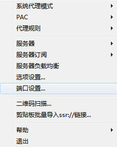
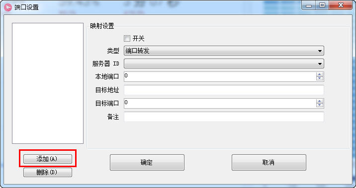
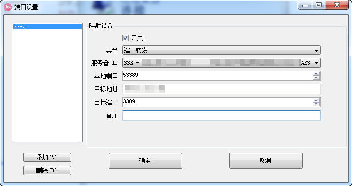
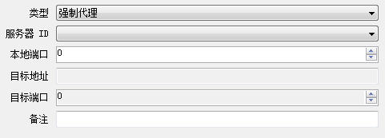

<!DOCTYPE html>
<html>
<head><meta name="generator" content="Hexo 3.9.0">
    <meta charset="UTF-8">
    <meta name="viewport" content="width=device-width, initial-scale=1, maximum-scale=1">
    
    <meta name="author" content="挥手の骑士">
    
    
    
    
    
    
    <title>关于 ShadowSocksR 端口转发 | 骑士の物语</title>
    <link href="https://yihuishou.github.io" rel="prefetch">

    <link rel="stylesheet" href="/css/bootstrap.min.css">
<link rel="stylesheet" href="/css/aos.css">
<link rel="stylesheet" href="/css/style.css">
    <script src="/js/jquery.min.js"></script>
    <script src="/js/bootstrap.min.js"></script>
    <script src="/js/aos.js"></script>
    <script src="/js/highslide/highslide-full.min.js"></script>
    <link rel="stylesheet" href="/js/highslide/highslide.css">
    <style type="text/css">
        @media (max-width: 768px) {
            body {
                background-color: #f0f0f0;
                background: url('/imgs/xsbg.gif');
                background-attachment: fixed;
            }
        }
    </style>
    
    <!--<script type="text/javascript">
      if (document.images) {
        var avatar = new Image();
        avatar.src = '/imgs/avatar.jpg'
        var previews = 'picHD_1.png,picHD_2.png,picHD_3.png,picHD_4.png,picHD_5.png,picHD_6.png,picHD_7.png,picHD_8.png,picHD_9.png,picHD_10.png,picHD_11.png,picHD_12.png,picHD_13.png,picHD_14.png,picHD_15.png,picHD_16.png,picHD_17.png,picHD_18.png,picHD_19.png,picHD_20.png,picHD_21.png,picHD_22.png,picHD_23.png,picHD_24.png,picHD_25.png,picHD_26.png,picHD_27.png,picHD_28.png,picHD_29.png,picHD_30.png,picHD_31.png,picHD_32.png,picHD_33.png,picHD_34.png,picHD_35.png,picHD_36.png,picHD_37.png,picHD_38.png,picHD_39.png,picHD_40.png,picHD_41.png,picHD_42.png'.split(',')
        var previewsPreLoad = []
        for(var i = 0; i < length; i++) {
          previewsPreLoad.push(new Image())
          previewsPreLoad[previewsPreLoad.length - 1].src = '/imgs/preview' + previews[i]
        }
      }
    </script>-->
</head></html>
<body>
    <!-- 背景轮播图功能 -->
    <section class="hidden-xs">
    <ul class="cb-slideshow">
        <li><span>天若</span></li>
        <li><span>有情</span></li>
        <li><span>天亦老</span></li>
        <li><span>我为</span></li>
        <li><span>长者</span></li>
        <li><span>续一秒</span></li>
    </ul>
</section>
    <!-- 欧尼酱功能, 谁用谁知道 -->
    
    <header class="navbar navbar-inverse" id="gal-header">
    <div class="container">
        <div class="navbar-header">
            <button type="button" class="navbar-toggle collapsed"
                    data-toggle="collapse" data-target=".bs-navbar-collapse"
                    aria-expanded="false">
                <span class="fa fa-lg fa-reorder"></span>
            </button>
            <a href="https://yihuishou.github.io">
                
                <style>
                    #gal-header .navbar-brand {
                        height: 54px;
                        line-height: 24px;
                        font-size: 28px;
                        opacity: 1;
                        background-color: rgba(0,0,0,0);
                        text-shadow: 0 0 5px #fff,0 0 10px #fff,0 0 15px #fff,0 0 20px #228DFF,0 0 35px #228DFF,0 0 40px #228DFF,0 0 50px #228DFF,0 0 75px #228DFF;
                    }
                </style>
                <!-- 这里使用文字(navbar_text or config.title) -->
                <div class="navbar-brand">骑士の物语</div>
                
            </a>
        </div>
        <div class="collapse navbar-collapse bs-navbar-collapse">
            <ul class="nav navbar-nav" id="menu-gal">
                
                
                <li class="">
                    <a href="/">
                        <i class="fa fa-home"></i>首页
                    </a>
                </li>
                
                
                
                <li class="">
                    <a href="/archives">
                        <i class="fa fa-archive"></i>归档
                    </a>
                </li>
                
                
            </ul>
        </div>
    </div>
</header>
    <div id="gal-body">
        <div class="container">
            <div class="row">
                <div class="col-md-8 gal-right" id="mainstay">
                    
<article class="article well article-body" id="article">
    <div class="breadcrumb">
        <i class="fa fa-home"></i>
        <a href="https://yihuishou.github.io">骑士の物语</a>
        >
        <span>关于 ShadowSocksR 端口转发</span>
    </div>
    <!-- 大型设备详细文章 -->
    <div class="hidden-xs">
        <div class="title-article">
            <h1>
                <a href="/2019/10/09/1453987926/">关于 ShadowSocksR 端口转发</a>
            </h1>
        </div>
        <div class="tag-article">
            
            <span class="label label-gal">
                <i class="fa fa-tags"></i>
                
                <a href="/tags/随笔/">随笔</a>
                
            </span>
            
            <span class="label label-gal">
                <i class="fa fa-calendar"></i> 2019-10-09
            </span>
            
        </div>
    </div>
    <!-- 小型设备详细文章 -->
    <div class="visible-xs">
        <center>
            <div class="title-article">
                <h4>
                    <a href="/2019/10/09/1453987926/">关于 ShadowSocksR 端口转发</a>
                </h4>
            </div>
            <p>
                <i class="fa fa-calendar"></i> 2019-10-09
            </p>
            <p>
                
                <i class="fa fa-tags"></i>
                
                <a href="/tags/随笔/">随笔</a>
                
                
                
            </p>
        </center>
    </div>
    <div class="content-article">
        <p>关于ShadowsocksR端口转发<br>默认情况下，我们在使用SSR Windows客户端时，会发现它只能自动代理HTTP流量，即80/443端口的流量，即使设置为全局代理模式也一样。</p>
<p>这对我们正常浏览网页及下载普通文件，基本没有影响。</p>
<p>但是电脑上一些常用的软件，如果走的是非HTTP协议的流量，又想让它通过SSR代理，那么就需要对SSR客户端进行一些额外设置了，比如端口转发。</p>
<p>以下相关内容，在SSR Windows客户端的基础上展开，</p>
<p>SSR 端口转发的用途<br>下面举两个常用的例子：</p>
<p>Windows远程桌面连接走SSR代理<br>比如手里有一台国外服务器，安装Windows系统，通过远程桌面连接进行管理。但是线路一般，连接很慢，操作很不流畅。这种情况就可以设置远程桌面走SSR代理，通过网络较好的SSR服务器进行中转，从而加快远程桌面连接速度，大幅减少卡顿。</p>
<p>Putty通过SSR中转连接Linux服务器<br>如果你使用的是Linux系列的服务器，同样因为网络不佳造成Putty连接不畅，那么通过SSR端口转发也可以帮忙解决。</p>
<p>以上两例适用于拥有多台VPS服务器的用户，仅做示例，其它Windows软件也可以参考实行。理论上，SSR端口转发可以在不借助其它工具的情况下，代理电脑上任意软件的流量。</p>
<p>如何使远程桌面连接走SSR代理<br>下面我们具体介绍一下，远程桌面连接的代理设置，其它软件可以参考，步骤是一样的。</p>
<p>原始环境：国外VPS安装Windows系统，网络状况较差，经常性连接失败，即使连接成功，操作也极其卡顿，无法正常使用。</p>
<p>改善效果：通过SSR转发远程桌面后，很快连接成功，操作流畅，与本地桌面操作区别不大。</p>
<p>具体方法：</p>
<p>1.打开SSR Windows客户端，右键点击任务栏小飞机，选择端口设置：</p>
<p></p>
<p>2.在端口设置窗口中，点击添加按钮。</p>
<p>注意：在点击添加之前，不要直接填写下图右侧内容，即使填写了也无法保存，没有效果。</p>
<p>3.下面就可以填写右侧内容了，如下图所示，填写完成后点击确定保存。</p>
<p>开关：打勾。<br>类型：选择端口转发。<br>服务器ID：选择之前设置好的SSR服务器。<br>本地端口：随意设置一个，用做后期远程桌面连接，建议设置为较大端口号，比如53389，避免冲突。<br>目标地址：填入Windows服务器IP地址。<br>目标端口：3389，即远程桌面连接的默认端口。</p>
<p>4.现在SSR的端口转发已经设置完毕，接下来可以使用远程桌面连接远程服务器了。</p>
<p>注意：在使用远程桌面时，要填写本机地址+53389，即127.0.0.1:53389,这样才能通过SSR代理，如下图所示：</p>
<p></p>
<p>5.远程桌面连接成功后的界面如下图所示：</p>
<p></p>
<p>6.设置成功后，如果你不想通过SSR代理连接远程桌面，那么直接将远程桌面的IP地址，由127.0.0.1:53389改为服务器IP即可，无需其它设置。</p>
<p>关于SSR 端口设置另外两项功能<br>SSR的端口设置功能中，除了端口转发外，还有两项：强制代理/规则代理。</p>
<p>这两项的设置比较简单粗暴，可以设置直接代理本地某个端口的流量，大家可以根据自身情况酌情使用。</p>
<p></p>
<p>提示：这个功能并不适用于前文所讲的远程桌面代理，因为远程桌面连接的是服务器3389端口，而连接时使用的本地端口并不固定。</p>
<p></p>
<p>在 Windows 下使用 SSR 客户端的时候经常会碰到启动 SSR 客户端弹出 1080 端口被占用的提示，超级的烦人，原因你懂的。明月最近也是频繁的碰到这个问题，并且是公司、家里电脑都碰上这个问题了，虽然只是每次电脑断电关机重启后会出现，一般等个几分钟后再次重启 SSR 客户端也就消失了，不过，很明显这很不科学，既然提示是被“占用”了，那么就要找到“占用”的罪魁祸首来！</p>
<p>今天就给大家分享一下具体的办法，明月在家里的 Windows 7 系统电脑实测有效的。</p>
<p>就是这个提示框，使用 SSR 客户端的朋友们应该不陌生吧？</p>
<p>解决的方法是：</p>
<p>1、SSR 的本地端口是 1080，首先要找到是哪个程序占用了该端口，window+R 组合键，调出命令窗口，输入命令：netstat -aon|findstr “1080”，回车，查看被占用端口对应的 PID，最后一位数字即 PID</p>
<p>2、打开任务管理器，切换到服务选项卡，在 PID 一列查看对应的进程是谁，然后结束掉，再重新启动 SSR 即可。</p>
<p>Git使用代理</p>
<p>如果使用的是 socks5(SSR)</p>
<p>例如代理地址为 127.0.0.1 端口 1080</p>
<p>命令：</p>
<p><code>git config --global http.proxy socks5://127.0.0.1:1080</code></p>
<p>如果使用的是Http/Https</p>
<p>命令：</p>
<p><code>git config --global https.proxy http://127.0.0.1:1080</code></p>
<p><code>git config --global https.proxy https://127.0.0.1:1080</code></p>
<p>取消代理</p>
<p><code>git config --global --unset http.proxy</code></p>
<p><code>git config --global --unset https.proxy</code></p>

    </div>
</article>


                </div>
                <aside class="col-md-4 gal-left" id="sidebar">
    <!-- 此为sidebar的搜索框, 非搜索结果页面 -->
<aside id="sidebar-search">
    <div class="search hidden-xs" data-aos="fade-up" data-aos-duration="2000">
        <form class="form-inline clearfix" id="search-form" method="get"
              action="/search/index.html">
            <input type="text" name="s" class="form-control" id="searchInput" placeholder="搜索文章~" autocomplete="off">
            <button class="btn btn-danger btn-gal" type="submit">
                <i class="fa fa-search"></i>
            </button>
        </form>
    </div>
</aside>
    <aside id="sidebar-author">
    <div class="panel panel-gal" data-aos="flip-right" data-aos-duration="3000">
        <div class="panel-heading" style="text-align: center">
            <i class="fa fa-quote-left"></i>
            挥手の骑士
            <i class="fa fa-quote-right"></i>
        </div>
        <div class="author-panel text-center">
            
            <p class="author-description"></p>
        </div>
    </div>
</aside>
    
    <!-- 要配置好leancloud才能开启此小工具 -->
    
    
    <aside id="sidebar-recent_posts">
    <div class="panel panel-gal recent hidden-xs" data-aos="fade-up" data-aos-duration="2000">
        <div class="panel-heading">
            <i class="fa fa-refresh"></i>
            近期文章
            <i class="fa fa-times-circle panel-remove"></i>
            <i class="fa fa-chevron-circle-up panel-toggle"></i>
        </div>
        <ul class="list-group list-group-flush">
            
            <li class="list-group-item">
                <span class="post-title">
                    <a href="/2020/10/10/2/"></a>
                </span>
            </li>
            
            <li class="list-group-item">
                <span class="post-title">
                    <a href="/2020/08/18/55226946/">Agent v3.2.1 插件激活码</a>
                </span>
            </li>
            
            <li class="list-group-item">
                <span class="post-title">
                    <a href="/2020/07/21/2412014068/">干掉 CMS 未来属于 ZGC</a>
                </span>
            </li>
            
            <li class="list-group-item">
                <span class="post-title">
                    <a href="/2020/07/21/4075219928/">OpenJDK 和 OracleJDK 的抉择</a>
                </span>
            </li>
            
            <li class="list-group-item">
                <span class="post-title">
                    <a href="/2020/07/20/368594680/">Flutter 音乐播放器开发之路（一）</a>
                </span>
            </li>
            
            <li class="list-group-item">
                <span class="post-title">
                    <a href="/2020/07/15/3650854255/">XaaS 到底是什么？</a>
                </span>
            </li>
            
            <li class="list-group-item">
                <span class="post-title">
                    <a href="/2020/07/15/4036766117/">让 Windows 10 开机自动登录</a>
                </span>
            </li>
            
            <li class="list-group-item">
                <span class="post-title">
                    <a href="/2020/07/14/466733536/">给 Flutter 项目初始化构建提个速</a>
                </span>
            </li>
            
            <li class="list-group-item">
                <span class="post-title">
                    <a href="/2020/06/12/4125727764/">JavaScript 中 Splice 函数与数组塌陷</a>
                </span>
            </li>
            
            <li class="list-group-item">
                <span class="post-title">
                    <a href="/2020/06/12/1586694155/">在 Java 中缩写 Lambda 表达式</a>
                </span>
            </li>
            
        </ul>
    </div>
</aside>
    
    
    <aside id="sidebar-rand_posts">
    <div class="panel panel-gal recent hidden-xs" data-aos="fade-up" data-aos-duration="2000">
        <div class="panel-heading">
            <i class="fa fa-refresh"></i>
            随机文章
            <i class="fa fa-times-circle panel-remove"></i>
            <i class="fa fa-chevron-circle-up panel-toggle"></i>
        </div>
        <ul class="list-group list-group-flush">
            
            
            <li class="list-group-item">
                <span class="post-title">
                    <a href="/2019/02/20/1504490322/">ANT 通配规则</a>
                </span>
            </li>
            
            <li class="list-group-item">
                <span class="post-title">
                    <a href="/2019/06/17/3032697242/">Go 看这一篇就够了</a>
                </span>
            </li>
            
            <li class="list-group-item">
                <span class="post-title">
                    <a href="/2019/04/17/1986098977/">Java 与闭包</a>
                </span>
            </li>
            
            <li class="list-group-item">
                <span class="post-title">
                    <a href="/2020/07/21/4075219928/">OpenJDK 和 OracleJDK 的抉择</a>
                </span>
            </li>
            
            <li class="list-group-item">
                <span class="post-title">
                    <a href="/2019/05/28/895793596/">SQL 中 in or 和 exist 区别</a>
                </span>
            </li>
            
            <li class="list-group-item">
                <span class="post-title">
                    <a href="/2017/10/11/250328113/">SpringBoot 部署 Jar 包时乱码的解决办法</a>
                </span>
            </li>
            
            <li class="list-group-item">
                <span class="post-title">
                    <a href="/2017/11/10/2230869343/">我喜欢的排序算法</a>
                </span>
            </li>
            
            <li class="list-group-item">
                <span class="post-title">
                    <a href="/2019/04/03/1811262184/">用于分析问题的 SMART 原则</a>
                </span>
            </li>
            
            <li class="list-group-item">
                <span class="post-title">
                    <a href="/2020/07/14/466733536/">给 Flutter 项目初始化构建提个速</a>
                </span>
            </li>
            
            <li class="list-group-item">
                <span class="post-title">
                    <a href="/2018/08/29/552068435/">认证 Authentication 和授权 Authorization 的区别</a>
                </span>
            </li>
            
        </ul>
    </div>
</aside>
    
    
    <aside id="gal-sets">
        <div class="panel panel-gal hidden-xs" data-aos="fade-up" data-aos-duration="2000">
            <ul class="nav nav-pills pills-gal">

                
                <li>
                    <a href="/2019/10/09/1453987926/index.html#sidebar-tags" data-toggle="tab" id="tags-tab">热门标签</a>
                </li>
                
                
                <li>
                    <a href="/2019/10/09/1453987926/index.html#sidebar-friend-links" data-toggle="tab" id="friend-links-tab">友情链接</a>
                </li>
                
                
                <li>
                    <a href="/2019/10/09/1453987926/index.html#sidebar-links" data-toggle="tab" id="links-tab">个人链接</a>
                </li>
                
            </ul>
            <div class="tab-content">
                
                <div class="cloud-tags tab-pane nav bs-sidenav fade" id="sidebar-tags">
    
    <a href="/tags/SpringSecurity/" style="font-size: 17.83591577825414px;" class="tag-cloud-link">SpringSecurity</a>
    
    <a href="/tags/随笔/" style="font-size: 8.723102443281128px;" class="tag-cloud-link">随笔</a>
    
    <a href="/tags/Xml/" style="font-size: 16.931028635414854px;" class="tag-cloud-link">Xml</a>
    
    <a href="/tags/大前端/" style="font-size: 11.652569827856679px;" class="tag-cloud-link">大前端</a>
    
    <a href="/tags/Flutter/" style="font-size: 13.105004237317003px;" class="tag-cloud-link">Flutter</a>
    
    <a href="/tags/Dart/" style="font-size: 13.526525595578782px;" class="tag-cloud-link">Dart</a>
    
    <a href="/tags/Go/" style="font-size: 18.171461846282448px;" class="tag-cloud-link">Go</a>
    
    <a href="/tags/IDEA/" style="font-size: 16.152006676741223px;" class="tag-cloud-link">IDEA</a>
    
    <a href="/tags/Java/" style="font-size: 10.607598374913938px;" class="tag-cloud-link">Java</a>
    
    <a href="/tags/JavaScript/" style="font-size: 19.2787209657067px;" class="tag-cloud-link">JavaScript</a>
    
    <a href="/tags/Oracle/" style="font-size: 8.882189841338635px;" class="tag-cloud-link">Oracle</a>
    
    <a href="/tags/Photoshop/" style="font-size: 12.883243019788921px;" class="tag-cloud-link">Photoshop</a>
    
    <a href="/tags/Restful/" style="font-size: 15.867764205175028px;" class="tag-cloud-link">Restful</a>
    
    <a href="/tags/RPG-Maker-MV/" style="font-size: 15.771231461621106px;" class="tag-cloud-link">RPG Maker MV</a>
    
    <a href="/tags/SQL/" style="font-size: 16.241297166524216px;" class="tag-cloud-link">SQL</a>
    
    <a href="/tags/SpringBoot/" style="font-size: 12.628517550239103px;" class="tag-cloud-link">SpringBoot</a>
    
    <a href="/tags/Swagger/" style="font-size: 14.628361230030478px;" class="tag-cloud-link">Swagger</a>
    
    <a href="/tags/Windows/" style="font-size: 9.468678801196592px;" class="tag-cloud-link">Windows</a>
    
    <a href="/tags/Deepleanring/" style="font-size: 10.320717497450385px;" class="tag-cloud-link">Deepleanring</a>
    
    <a href="/tags/Vue/" style="font-size: 10.47971133400738px;" class="tag-cloud-link">Vue</a>
    
    <a href="/tags/Mysql/" style="font-size: 8.672723702750929px;" class="tag-cloud-link">Mysql</a>
    
    <a href="/tags/Docker/" style="font-size: 17.57454211732027px;" class="tag-cloud-link">Docker</a>
    
    <a href="/tags/Hexo/" style="font-size: 19.830875281549762px;" class="tag-cloud-link">Hexo</a>
    
    <a href="/tags/VsCode/" style="font-size: 8.454950110784848px;" class="tag-cloud-link">VsCode</a>
    
    <a href="/tags/SpringCloud/" style="font-size: 11.120066637328563px;" class="tag-cloud-link">SpringCloud</a>
    
    <a href="/tags/Redis/" style="font-size: 10.061434201730632px;" class="tag-cloud-link">Redis</a>
    
</div>
                
                
                <div class="friend-links tab-pane nav bs-sidenav fade" id="sidebar-friend-links">
    
    <li>
        <a href="http://noodlefighter.com" target="_blank">虾包</a>
    </li>
    
    <li>
        <a href="https://loli.la" target="_blank">超级叫了</a>
    </li>
    
    <li>
        <a href="https://konata9.github.io" target="_blank">吃土的小此方</a>
    </li>
    
</div>
                
                
                <div class="links tab-pane nav bs-sidenav fade" id="sidebar-links">
    
    <li>
        <a href="https://github.com/yihuishou" target="_blank">Github</a>
    </li>
    
    <li>
        <a href="https://gite.com/yihuishou" target="_blank">码云</a>
    </li>
    
    <li>
        <a href="https://www.zhihu.com/people/hei-yi-tian-shi-48" target="_blank">知乎</a>
    </li>
    
</div>
                
            </div>
        </div>
    </aside>
    
</aside>
            </div>
        </div>
    </div>
    <footer id="gal-footer">
    <div class="container">
        Copyright © 2018 挥手の骑士 Powered by <a href="https://hexo.io/" target="_blank">Hexo</a>.&nbsp;Theme by <a href="https://github.com/ZEROKISEKI" target="_blank">AONOSORA</a>
    </div>
</footer>

<!-- 回到顶端 -->
<div id="gal-gotop">
    <i class="fa fa-angle-up"></i>
</div>
</body>
<script src="/js/activate-power-mode.js"></script>
<script>

    // 配置highslide
	hs.graphicsDir = '/js/highslide/graphics/'
    hs.outlineType = "rounded-white";
    hs.dimmingOpacity = 0.8;
    hs.outlineWhileAnimating = true;
    hs.showCredits = false;
    hs.captionEval = "this.thumb.alt";
    hs.numberPosition = "caption";
    hs.align = "center";
    hs.transitions = ["expand", "crossfade"];
    hs.lang.number = '共%2张图, 当前是第%1张';
    hs.addSlideshow({
      interval: 5000,
      repeat: true,
      useControls: true,
      fixedControls: "fit",
      overlayOptions: {
        opacity: 0.75,
        position: "bottom center",
        hideOnMouseOut: true
      }
    })

    // 初始化aos
    AOS.init({
      duration: 1000,
      delay: 0,
      easing: 'ease-out-back'
    });

</script>
<script>
	POWERMODE.colorful = 'true';    // make power mode colorful
	POWERMODE.shake = 'true';       // turn off shake
	// TODO 这里根据具体情况修改
	document.body.addEventListener('input', POWERMODE);
</script>
<script>
    window.slideConfig = {
      prefix: '/imgs/slide/background',
      ext: 'jpg',
      maxCount: '6'
    }
</script>
<script src="/js/hs.js"></script>
<script src="/js/blog.js"></script>


</html>